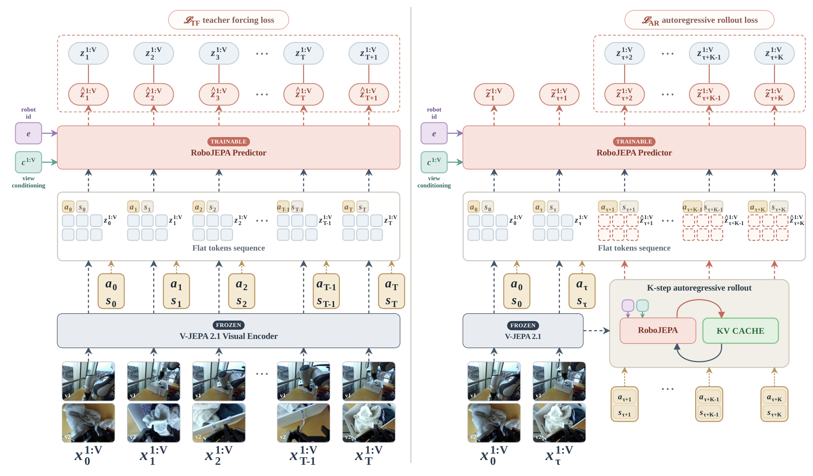
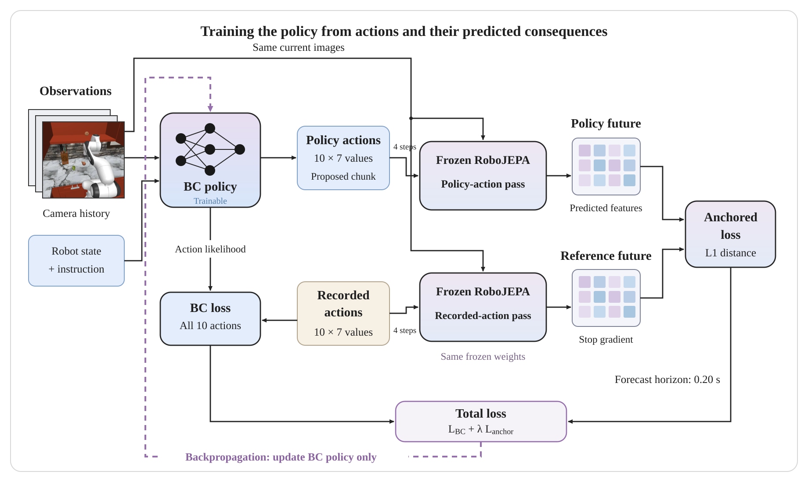
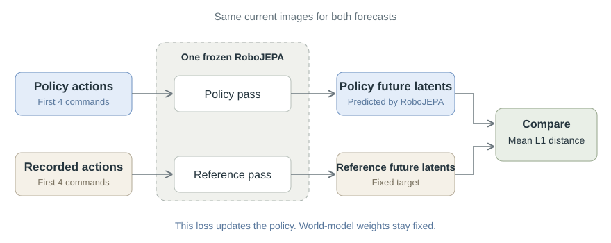
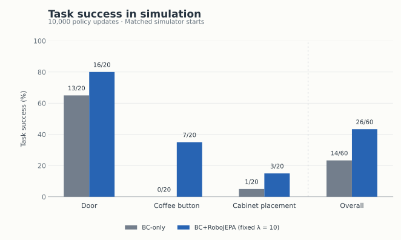

Technical report
Improving Imitation Learning Policies with World-Model Supervision
Abstract
Can a pretrained action-conditioned world model improve a robot policy by supervising the predicted consequences of its actions? We investigate this question by augmenting behavior cloning (BC) with an anchored consequence loss. Given the same current observation, a frozen RoboJEPA model predicts future latents for two action sequences: one proposed by the policy and one recorded in a demonstration. We minimize the difference between these predictions alongside the policy’s standard imitation loss. Gradients pass through the frozen world model to update the policy; the world model is used only during training.
We evaluate this approach using 900 demonstrations across three RoboCasa manipulation tasks and 60 matched simulator starting states. After 10,000 policy updates, BC+RoboJEPA with fixed-weight L1 supervision (λ = 10) achieves 26/60 successes (43.3%), compared with 14/60 (23.3%) for BC-only, an improvement of 20 percentage points. These results offer early evidence that supervision from predicted action consequences can improve imitation learning.
1. Introduction
Behavior cloning trains a robot policy to reproduce actions recorded in demonstrations [1]. Given camera observations, robot measurements, and a task instruction, the policy learns which commands a demonstrator would issue. This provides direct supervision in action space. However, the imitation objective does not explicitly measure what the predicted actions would do to the environment. For manipulation tasks, those consequences matter: a command must establish contact, move an object, or complete a placement.
An action-conditioned world model offers a possible source of additional supervision. It predicts how a scene will change after a proposed sequence of robot actions. For example, RoboJEPA predicts future latents and supports planning by evaluating candidate actions [2]. This motivates a complementary question: can predictions from a frozen world model improve the training of an imitation policy?
We study this question using a BC-Transformer policy and a pretrained RoboJEPA model. During training, the policy proposes an action sequence from the current observation. RoboJEPA then predicts the consequences of that sequence. The central design choice is how to turn this prediction into a useful training target.
Directly comparing a predicted future with the actual future observation can penalize the policy for errors made by the world model. Even the demonstrated actions may produce an imperfect forecast. We therefore use the world model’s prediction under the recorded actions as the reference. From the same current observation, we compare the predicted consequences of the policy’s actions with those of the demonstrated actions. We call this an anchored consequence loss.
This construction has a useful property: when the proposed actions equal the recorded actions, the consequence loss is zero, even if the world model’s forecast differs from the actual future. It does not guarantee physically accurate predictions or eliminate action-dependent model errors. Instead, it provides a model-based measure of consequence similarity that complements ordinary action imitation.
We test the approach on three tasks in RoboCasa [3]: closing a cabinet door, pressing a coffee-machine button, and placing an object from a counter into a cabinet. Both policies use the same 900 training demonstrations, initial weights, and optimizer settings. Evaluation restores the same 20 held-out demonstration starts per task, with matched seeds and rollout horizons. The world model and its visual encoder remain frozen throughout policy training, and deployment uses only the trained policy.
We compare fixed loss weighting with dynamic gradient-ratio weighting. With fixed λ = 10 and L1 consequence loss, BC+RoboJEPA improves aggregate success from 14/60 to 26/60 at 10,000 updates, with gains on all three tasks. We also compare L1 and mean squared error under matched adaptive weighting for both BC-Transformer and diffusion policy. This is a comparison at a matched training budget; it does not establish an improvement in learning speed.
This report describes the method and experimental comparison. Further experiments are needed to establish whether the benefit persists across training seeds, tasks, and policy architectures.
2. Methodology
2.1 Dataset: three RoboCasa tasks
RoboCasa provides simulated kitchen environments and robot demonstrations with camera images, robot measurements, controller commands, and saved simulator states [3]. We use generated demonstrations for three tasks, preserving complete trajectories at their original control rate.
| Task | What the robot must do | Train | Held out |
|---|---|---|---|
| CloseSingleDoor | Close a cabinet door. | 300 | 20 |
| CoffeePressButton | Press the coffee-machine button. | 300 | 20 |
| PnPCounterToCab | Pick an object from the counter and place it inside a cabinet. | 300 | 20 |
| Total trajectories | 900 | 60 | |
The training episodes follow the dataset’s 300_demos selection. For each task, we use the first 20 episodes in WorldToken’s published held-out list [4]. These episodes are separate from policy-training data. Their saved initial states let us evaluate both policies from identical scenes.
The controller runs at 20 Hz: one action every 0.05 seconds. Each learned action has seven values: three end-effector translation commands, three rotation commands, and one gripper command. Base, torso, and mode controls are constant in this subset and are appended before commands reach the simulator.
2.2 Imitation model: BC-Transformer
Our action policy is the BC-Transformer baseline released with WorldToken, using its robomimic implementation [4][5]. Its job is to turn recent observations and an instruction into robot commands.
Input
Ten observed timesteps from three cameras: two external views and one wrist view. Robot measurements describe the arm, gripper, and base. A language embedding provides the task instruction.
Output
A chunk of 10 future actions × 7 values. A five-component Gaussian mixture describes the possible commands at each future step.
The policy’s image encoders, Transformer, and action head are trained from matching random initialization in the two runs. The pretrained task-language embedding is fixed. During training, the recorded action chunk tells the policy what the demonstrator did.
2.3 World model: frozen RoboJEPA
RoboJEPA predicts future latents from current camera images and a sequence of robot actions [2].

We use the released 2B predictor checkpoint at 450,000 world-model training steps, with its V-JEPA 2.1 visual encoder. We load these weights directly and keep them fixed.
Input in our experiment
The current external-left and wrist-camera images, plus four ordered controller commands. The two branches use the same current images and model weights.
Output
Future latents 0.20 seconds ahead: four commands × 0.05 seconds.
Exact command format
The policy proposes seven values per command. We append the five fixed base, torso, and mode controls, clip commands to the valid range, and reorder them into RoboJEPA’s released controller-command layout. Four 12-value commands give 48 values, padded to its 64-value action token. The separate state input is zero-filled in this configuration; view and robot identifiers select the two cameras and the franka_omron embodiment.
For the differentiable branch, each proposed action is the mean of its highest-weight Gaussian component. The component choice is detached; gradients pass through the selected means. The native BC loss still trains the complete action distribution.
2.4 Training flow
Every training batch contains recorded observations and actions. The policy proposes a new action chunk. We compute its native imitation loss and an additional loss comparing predicted consequences. Both signals update the policy.

The imitation loss supervises all ten actions. The world-model loss uses only the first four actions, matching the 0.20-second forecast interval. Only samples with eligible complete action windows contribute to the consequence loss; the remaining samples retain BC supervision.
2.5 Loss functions: imitate actions and match consequences
Native imitation loss
BC increases the probability assigned to the recorded commands. We preserve the baseline’s Gaussian-mixture negative log-likelihood (NLL), averaged over the batch and ten action steps:
The expectation averages over demonstration samples and the ten action steps, sampled uniformly. Here, h contains the observations and instruction, A* is the recorded chunk, and a*t+k is its command at step k.
Anchored consequence loss
A world model can make prediction errors even when given the correct demonstrated actions. Comparing the policy’s predicted future latents directly with the actual future could therefore penalize the policy for errors in the world model. The anchored loss instead compares two predictions from the same current images: one using the policy’s actions and one using the demonstrated actions. This gives the policy a reference within the same model and can reduce errors shared by both predictions.

Policy future latents
ẑpolicy = Fφ(Eψ(It), Â(4)t)
Reference future latents
ẑref = Fφ(Eψ(It), A*(4)t)
Eψ is the frozen image encoder; Fφ is the frozen predictor, including command packing. Â(4) contains the first four proposed actions and A*(4) the corresponding recorded actions.
The expectation is over eligible demonstration samples; D is the number of latent values. sg stops gradients through the reference. The target is another predicted future latent, not an encoded actual future image. Identical action blocks give zero loss. Shared prediction errors can cancel, but action-dependent errors can remain.
Combined objective
We train with both losses. The coefficient λt controls how much the consequence signal contributes at each training step.
2.6 Fixed and dynamic loss weighting
Our first BC+RoboJEPA comparison uses a fixed λ = 10. We then test adaptive weighting, described below. The L1/MSE ablation uses this same adaptive rule for both distances; each results table identifies its weighting setting.
BC teaches the policy to copy demonstrated actions. The anchored loss adds guidance about their predicted effects. These losses measure different things, so their numerical values are not directly comparable. Giving them equal weights would not give them equal influence on training.
What matters is how strongly each loss pushes the policy to change—its gradient magnitude. If the consequence gradient is too large, it can overwhelm the demonstration signal, even though the world model is imperfect. If it is too small, the extra supervision has little effect. This balance can also change as the policy learns.
In the adaptive runs, we recalculate the weight at every update: turn it down when the consequence gradient is strong, and up when it is weak relative to BC. This keeps imitation as the main signal while giving the world model a controlled supporting role.
We first measure the two gradients over all trainable policy parameters, before gradient clipping:
The rule targets a consequence gradient with 25% of the BC gradient’s magnitude, when the floor and cap are inactive. For example, if BC’s gradient has magnitude 100, we scale the consequence gradient to 25. This is a balance of gradient strength, not a claim that 25% of learning comes from RoboJEPA. It also does not guarantee that the two gradients point in the same direction.
This choice draws on gradient-based loss balancing in GradNorm [6] and VQGAN [7]; the equation above specifies the rule used here.
Implementation details
The norms are global L2 norms across all trainable policy parameters. The coefficient is recomputed each update without smoothing and detached before forming LBC + λtLanchor. If either gradient norm is zero, the consequence coefficient is zero. The native optimizer and gradient clipping are retained. We also record gradient cosine similarity to measure whether the two signals agree in direction.
2.7 Inference
↶ Refresh observations and repeat at 20 Hz
3. Experiments
Task success in simulation
For the BC-Transformer comparison, we evaluate the policies after 10,000 training updates on 20 saved starts per task, giving 60 trials overall. The two runs use the same initial states, seeds, and task horizons. Success is determined by the simulator’s task-completion checks.
This first comparison uses L1 anchored consequence loss with fixed λ = 10. The adaptive L1/MSE comparison follows below.

| Task | BC-only | BC+RoboJEPA |
|---|---|---|
| Close cabinet door | 13/20 · 65% | 16/20 · 80% |
| Press coffee button | 0/20 · 0% | 7/20 · 35% |
| Counter-to-cabinet placement | 1/20 · 5% | 3/20 · 15% |
| Overall | 14/60 · 23.3% | 26/60 · 43.3% |
BC+RoboJEPA completes 12 more trials than BC-only, a 20-percentage-point increase in overall success. It improves performance on all three tasks, although cabinet placement remains difficult at 3/20 successes.
These results use one training seed and 60 matched evaluation trials. More seeds and tasks are needed to assess how consistently the improvement holds.
L1 vs. L2 consequence loss across policies
Does the choice of latent distance change task success? We compare L1 (mean absolute error) with MSE (mean squared error, or squared L2) in the anchored loss. Both compare the policy-action forecast with the detached recorded-action forecast from the same frozen RoboJEPA.
LMSE = mean((ẑpolicy − sg(ẑref))2)
MSE gives larger feature mismatches more weight; it is used directly, without taking a square root. We preserve each policy’s native imitation loss: Gaussian-mixture NLL for BC-Transformer and noise-prediction MSE for diffusion policy. Only the additional consequence distance changes.
Within each architecture, L1 and MSE use matching initial weights, training seed 123, the same 900 demonstrations, frozen teacher, four-command forecast, and 25% adaptive gradient-strength target. Every checkpoint is evaluated after 10,000 updates on the same 60 saved starts, seeds, and task horizons. The native-only policy is included as the reference.
BC-Transformer: 10,000 updates
| Task | BC-only | +RoboJEPA L1 | +RoboJEPA MSE |
|---|---|---|---|
| Door closing | 13/20 · 65% | 17/20 · 85% | 17/20 · 85% |
| Coffee button | 0/20 · 0% | 5/20 · 25% | 2/20 · 10% |
| Counter-to-cabinet | 1/20 · 5% | 1/20 · 5% | 1/20 · 5% |
| Overall | 14/60 · 23.3% | 23/60 · 38.3% | 20/60 · 33.3% |
Diffusion policy: 10,000 updates
| Task | DP-only | +RoboJEPA L1 | +RoboJEPA MSE |
|---|---|---|---|
| Door closing | 16/20 · 80% | 17/20 · 85% | 14/20 · 70% |
| Coffee button | 2/20 · 10% | 7/20 · 35% | 6/20 · 30% |
| Counter-to-cabinet | 0/20 · 0% | 0/20 · 0% | 0/20 · 0% |
| Overall | 18/60 · 30.0% | 24/60 · 40.0% | 20/60 · 33.3% |
L1 performs better than MSE at 10k in both policy comparisons: 23 vs. 20 successes for BC-Transformer, and 24 vs. 20 for diffusion policy. For BC, the difference is on the coffee-button task. For diffusion policy, it comes from door closing and coffee-button pressing.
Both distances exceed their native-only baseline in overall success at this checkpoint. These single-seed comparisons favor L1 for the next experiment; they do not establish that L1 will always outperform MSE. The earlier 26/60 BC result uses fixed λ = 10 and is separate from this matched adaptive-loss comparison.
Adaptive gradient target: 25% vs. 30%
We test whether a stronger consequence signal helps BC+RoboJEPA. Both runs use anchored L1 loss, the same frozen world model, matching initial policy weights, training seed 123, and 900 demonstrations. We change the adaptive gradient target from 25% to 30% and evaluate both policies at 10,000 updates on the same 60 saved starts, seeds, and task horizons.
The percentage specifies the target magnitude of the weighted consequence gradient relative to the native BC gradient, before clipping. It is not a percentage of the total loss; the adaptive rule is defined in Section 2.6.
| Task | 25% target | 30% target |
|---|---|---|
| Door closing | 17/20 · 85% | 17/20 · 85% |
| Coffee button | 5/20 · 25% | 2/20 · 10% |
| Counter-to-cabinet | 1/20 · 5% | 1/20 · 5% |
| Overall | 23/60 · 38.3% | 20/60 · 33.3% |
Increasing the target to 30% did not improve success in this 10k, single-seed comparison. Overall success fell by three trials, or 5 percentage points, entirely on the coffee-button task; door and cabinet success counts were unchanged.
Qualitative comparisons
The following are selected matched success/failure examples from the three tasks. These videos compare BC-only with the fixed-λ = 10, L1 BC+RoboJEPA run. All policies use 10k-update checkpoints; within each pair, the initial state, seed, camera, and playback speed are matched.
Counter-to-cabinet placement
Instruction: “Pick the mango from the counter and place it in the cabinet.” Both 10k-update policies use the same recorded initial state and seed, with a 500-step evaluation horizon.
BC-only
Task incompleteThe target object remains on the counter. The task is not completed within the 500-step limit.
Download videoBC+RoboJEPA
SuccessThe policy picks up the mango and places it inside the cabinet, completing the task in 234 steps.
Download videoClose the microwave door
Instruction: “Close the microwave door.” Both 10k-update policies use the same recorded initial state and seed, with a 500-step evaluation horizon.
BC-only
Task incompleteThe policy does not complete the task within the 500-step limit.
Download videoBC+RoboJEPA
SuccessThe policy completes the task in 251 steps, reproducing its original successful evaluation.
Download videoPress the coffee-machine button
Instruction: “Press the button on the coffee machine to serve coffee.” Both 10k-update policies use the same recorded initial state and seed, with a 300-step evaluation horizon.
BC-only
Task incompleteBC-only does not activate the coffee machine within the 300-step limit.
Download videoBC+RoboJEPA
SuccessBC+RoboJEPA activates the machine at step 58 and completes the task at step 77 after moving the gripper away.
Download video4. Conclusion
We investigated whether a frozen action-conditioned world model can provide useful supervision for imitation learning. Our anchored consequence loss compares the predicted effects of policy actions with those of demonstrated actions, while preserving the policy’s native imitation objective.
In our three-task RoboCasa experiment, BC+RoboJEPA with fixed λ = 10 and L1 loss achieves 26/60 successes after 10,000 updates, compared with 14/60 for BC-only. This result supports further study of predicted consequences as a training signal. The world model is needed only during training; inference uses the policy alone.
5. Future Work
Our next goal is to test whether the benefit extends beyond the current policies and three-task setting.
- Additional policy architectures. Extend the BC-Transformer and diffusion-policy comparisons to more architectures while retaining each policy’s native training loss.
- Multiple training seeds. Repeat matched baseline and augmented runs with several random seeds, and report average task success and variability.
- More tasks and generalization. Expand the task set and evaluate held-out scenes, objects, and task variations to test whether the improvement transfers beyond familiar training conditions.
- Real-world data. Test the method on a real-robot demonstration dataset, then evaluate on real hardware.
References
-
Takayuki Osa, Joni Pajarinen, Gerhard Neumann, J. Andrew Bagnell, Pieter Abbeel, and Jan Peters. An Algorithmic Perspective on Imitation Learning. Foundations and Trends in Robotics, 7(1–2):1–179, 2018.
-
Artem Zholus, Nicolas Beltran-Velez, Jianhao Yuan, Sarath Chandar, Tushar Nagarajan, Daniel Severo, Koustuv Sinha, Michal Drozdzal, Adriana Romero Soriano, Jeannette Bohg, Nicolas Ballas, and Mahmoud Assran. RoboJEPA: Scaling Robotic Latent World Models. arXiv preprint arXiv:2610.10515, 2026.
-
Soroush Nasiriany, Abhiram Maddukuri, Lance Zhang, Adeet Parikh, Aaron Lo, Abhishek Joshi, Ajay Mandlekar, and Yuke Zhu. RoboCasa: Large-Scale Simulation of Everyday Tasks for Generalist Robots. Robotics: Science and Systems (RSS), 2024.
-
Chunkai Yang, Andong Yang, Di Huang, Chao Gao, and Guyue Zhou. WorldToken: Time-First Sequence Modeling for Robotic Imitation Learning. arXiv preprint arXiv:2608.22591, version 3, 2026.
-
Ajay Mandlekar, Danfei Xu, Josiah Wong, Soroush Nasiriany, Chen Wang, Rohun Kulkarni, Li Fei-Fei, Silvio Savarese, Yuke Zhu, and Roberto Martín-Martín. What Matters in Learning from Offline Human Demonstrations for Robot Manipulation. Conference on Robot Learning (CoRL), 2021.
-
Zhao Chen, Vijay Badrinarayanan, Chen-Yu Lee, and Andrew Rabinovich. GradNorm: Gradient Normalization for Adaptive Loss Balancing in Deep Multitask Networks. International Conference on Machine Learning (ICML), 2018.
-
Patrick Esser, Robin Rombach, and Björn Ommer. Taming Transformers for High-Resolution Image Synthesis. IEEE/CVF Conference on Computer Vision and Pattern Recognition (CVPR), 2021.